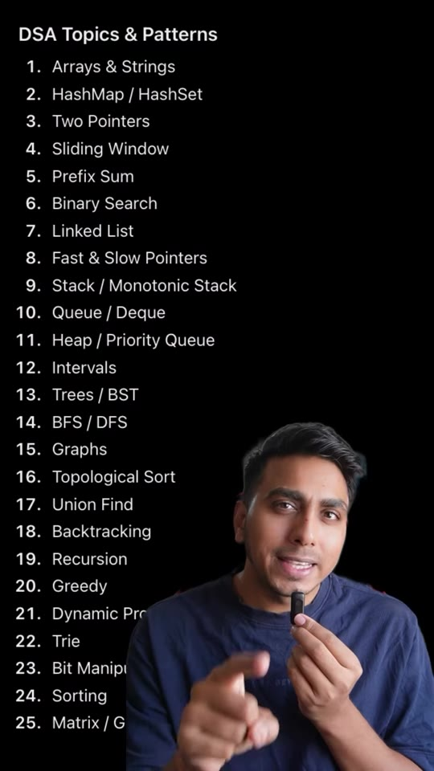
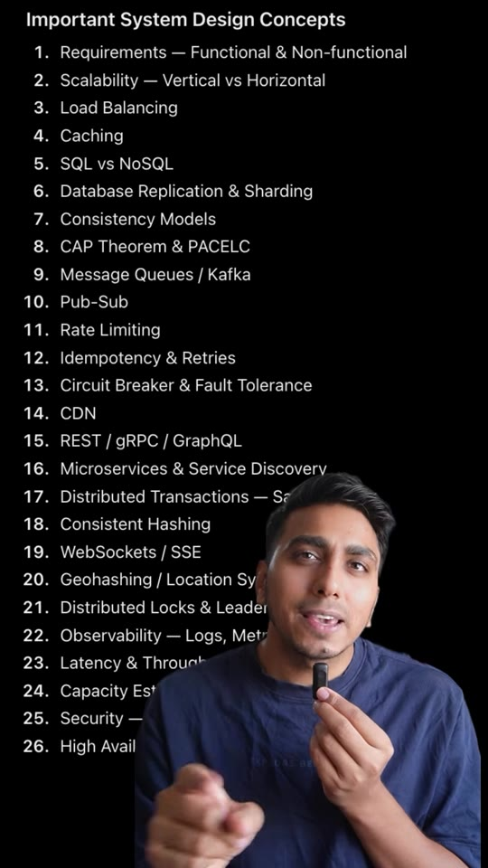
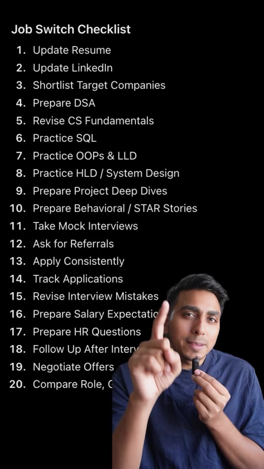

Career · Job-Switch
2-Month Software Engineering Job Switch & Placement Roadmap
Library / Career / Job-Switch
A dense, comprehensive 2-month engineering interview roadmap designed for campus placements and lateral job switches. Spanning seven technical tracks, it catalogues 25 core Data Structures & Algorithms patterns, 20 Computer Science fundamentals, 20 foundational Git commands, 26 High-Level System Design concepts, 20 SQL query and database optimization topics, 25 OOP & Low-Level Design (LLD) principles, and a 20-point job hunt execution checklist.

Steps
- DSA Pattern Recognition (Month 1, Weeks 1–3): Drill the 25 foundational algorithmic patterns rather than random problem sets: Arrays & Strings, HashMap/HashSet, Two Pointers, Sliding Window, Prefix Sum, Binary Search, Linked List, Fast & Slow Pointers, Monotonic Stack, Queue/Deque, Heap/Priority Queue, Intervals, Trees/BST, BFS/DFS, Graphs, Topological Sort, Union Find, Backtracking, Recursion, Greedy, Dynamic Programming, Trie, Bit Manipulation, Sorting, Matrix/Grid. (00:04)
- CS Core Fundamentals (Month 1, Week 4): Review the 20 essentials of systems programming: OS architectures, Process vs Thread, Concurrency & Sync, Deadlocks, Memory Management, Networks (TCP/UDP, HTTP/HTTPS, DNS/TLS), and DBMS (ACID, Indexing, Normalization, Isolation levels). (00:06)
- Version Control Mastery (Ongoing): Practice hands-on Git operations beyond basic commits:
git rebase,cherry-pick,stash,restore,reset, andrevert. (00:08) - High-Level System Design (HLD) (Month 2, Weeks 1–2): Study 26 architectural pillars: Functional vs Non-functional requirements, Horizontal vs Vertical scaling, Load balancers, Caching strategies, SQL vs NoSQL, Database sharding & replication, CAP & PACELC theorems, Kafka message queues, Pub-Sub, Rate limiters, Circuit breakers, Consistent hashing, WebSockets, Distributed locks, and Observability. (00:11)
- Relational Database & SQL Querying (Month 2, Week 2): Master advanced querying: CTEs, Window functions (
ROW_NUMBER(),DENSE_RANK()), Complex Joins, Query Optimization (EXPLAIN plans), and Stored Procedures. (00:14) - OOP & Low-Level Design (LLD) (Month 2, Week 3): Build software with clean modular architecture: SOLID principles, UML sequence diagrams, and Gang of Four (GoF) design patterns (Factory, Strategy, Observer, Decorator, Adapter, Singleton, State, Dependency Injection). (00:18)
- Application & Negotiation Sprint (Month 2, Week 4): Execute the 20-step checklist: polish resume, target company shortlisting, peer mock interviews, referral requests, application tracking, STAR behavioral stories, salary research, and counter-offer negotiation. (00:22)


Verbatim
| When | Where | Text |
|---|---|---|
| 00:00 | screen | Placement or Job Ready · Switch Job in 2 Months |
| 00:04 | screen | DSA Topics & Patterns 1. Arrays & Strings · 2. HashMap / HashSet · 3. Two Pointers · 4. Sliding Window · 5. Prefix Sum · 6. Binary Search · 7. Linked List · 8. Fast & Slow Pointers · 9. Stack / Monotonic Stack · 10. Queue / Deque · 11. Heap / Priority Queue · 12. Intervals · 13. Trees / BST · 14. BFS / DFS · 15. Graphs · 16. Topological Sort · 17. Union Find · 18. Backtracking · 19. Recursion · 20. Greedy · 21. Dynamic Programming · 22. Trie · 23. Bit Manipulation · 24. Sorting · 25. Matrix / Grid |
| 00:06 | screen | CS Fundamentals 1. Operating Systems · 2. Process vs Thread · 3. Concurrency & Synchronization · 4. Deadlock · 5. Memory Management · 6. Computer Networks · 7. TCP vs UDP · 8. HTTP / HTTPS · 9. DNS & TLS · 10. DBMS · 11. ACID & Transactions · 12. Indexing · 13. Normalization · 14. Isolation Levels · 15. OOP Concepts · 16. SOLID Principles · 17. Time & Space Complexity · 18. Linux / Command Line · 19. Compilers & Execution Basics · 20. Computer Architecture Basics |
| 00:08 | screen | Important Git Commands 1. git init — Initialize repository 2. git clone — Clone repository 3. git status — Check changes 4. git add — Stage changes 5. git commit — Commit changes 6. git log — View commit history 7. git diff — View differences 8. git branch — Manage branches 9. git switch / git checkout — Switch branch 10. git merge — Merge branches 11. git pull — Fetch + merge changes 12. git fetch — Download remote changes 13. git push — Push commits 14. git remote — Manage remotes 15. git stash — Temporarily save work 16. git reset — Move/undo commits 17. git revert — Safely undo commit 18. git restore — Restore working tree 19. git rebase — Reapply commits onto another base 20. git cherry-pick — Apply specific commit |
| 00:11 | screen | Important System Design Concepts 1. Requirements — Functional & Non-functional · 2. Scalability — Vertical vs Horizontal · 3. Load Balancing · 4. Caching · 5. SQL vs NoSQL · 6. Database Replication & Sharding · 7. Consistency Models · 8. CAP Theorem & PACELC · 9. Message Queues / Kafka · 10. Pub-Sub · 11. Rate Limiting · 12. Idempotency & Retries · 13. Circuit Breaker & Fault Tolerance · 14. CDN · 15. REST / gRPC / GraphQL · 16. Microservices & Service Discovery · 17. Distributed Transactions — Saga · 18. Consistent Hashing · 19. WebSockets / SSE · 20. Geohashing / Location Systems · 21. Distributed Locks & Leader Election · 22. Observability — Logs, Metrics, Traces · 23. Latency & Throughput · 24. Capacity Estimation · 25. Security & Auth · 26. High Availability |
| 00:14 | screen | Important SQL Topics & Commands 1. SELECT, WHERE, ORDER BY · 2. GROUP BY, HAVING · 3. INSERT, UPDATE, DELETE · 4. CREATE, ALTER, DROP, TRUNCATE · 5. Joins — INNER, LEFT, RIGHT, FULL · 6. Subqueries · 7. CTEs · 8. Aggregate Functions — COUNT, SUM, AVG, MIN, MAX · 9. Window Functions — ROW_NUMBER, RANK, DENSE_RANK · 10. Indexes · 11. Primary Key / Foreign Key · 12. Constraints · 13. Normalization · 14. Transactions & ACID · 15. Isolation Levels · 16. Views · 17. Stored Procedures · 18. UNION / UNION ALL · 19. CASE WHEN · 20. Query Optimization |
| 00:18 | screen | OOPs & LLD Concepts 1. Classes & Objects · 2. Encapsulation · 3. Abstraction · 4. Inheritance · 5. Polymorphism · 6. Association / Aggregation / Composition · 7. SOLID Principles · 8. Interfaces & Abstract Classes · 9. Low Coupling & High Cohesion · 10. Composition over Inheritance · 11. UML Class Diagrams · 12. Sequence Diagrams · 13. Design Patterns · 14. Factory · 15. Strategy · 16. Observer · 17. Decorator · 18. Adapter · 19. Singleton · 20. State / Command · 21. Dependency Injection · 22. Extensibility & Modularity · 23. Thread Safety Basics · 24. Error Handling · 25. LLD Practice |
| 00:22 | screen | Job Switch Checklist 1. Update Resume · 2. Update LinkedIn · 3. Shortlist Target Companies · 4. Prepare DSA · 5. Revise CS Fundamentals · 6. Practice SQL · 7. Practice OOPs & LLD · 8. Practice HLD / System Design · 9. Prepare Project Deep Dives · 10. Prepare Behavioral / STAR Stories · 11. Take Mock Interviews · 12. Ask for Referrals · 13. Apply Consistently · 14. Track Applications · 15. Revise Interview Mistakes · 16. Prepare Salary Expectations · 17. Prepare HR Questions · 18. Follow Up After Interviews · 19. Negotiate Offers · 20. Compare Role, Compensation & Growth |
| — | caption | Job switch or get placement ready in 2 months, comment anything for detailed roadmap |
Tools & links
- LeetCode — Pattern-based algorithmic practice — leetcode.com
- Creator profile — @pradeep_kumar_iiitd (Pradeep kumar) — instagram.com/pradeep_kumar_iiitd
Try this
- Select 2 unfamiliar DSA patterns (e.g., Monotonic Stack, Topological Sort) and solve 3 canonical problems for each on LeetCode.
- Design a Rate Limiter or URL Shortener end-to-end using the 26 system design pillars (capacity estimation, caching layer, database choice, and fault tolerance).
Open questions
The video presents a 2-month timeline for covering 150+ dense topics across DSA, HLD, LLD, and CS fundamentals. For candidates starting from scratch, 2 months is extremely aggressive; this roadmap functions best as a rapid refresher for engineers who already have working foundations.